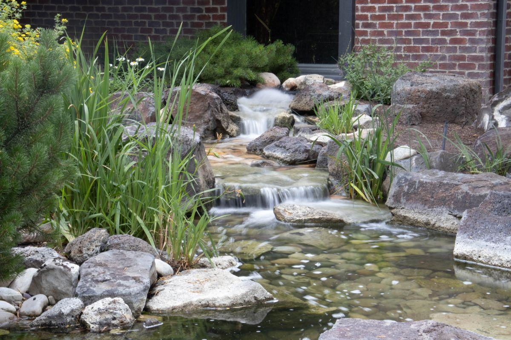

Une cascade transforme l'expérience d'un bassin. Elle ajoute le mouvement, le bruit et une oxygénation bien réelle. Mais elle se conçoit comme un ouvrage hydraulique : dénivelé, débit, étanchéité et choix des pierres se décident avant le premier coup de pelle.

La première raison d'ajouter une cascade est sensorielle. Le bruit de l'eau couvre la circulation lointaine, la voix des voisins, le bourdonnement d'une climatisation. C'est un masque sonore d'une efficacité étonnante, et il rend un jardin urbain nettement plus reposant. La deuxième raison est fonctionnelle : le brassage augmente réellement la teneur en oxygène dissous, ce qui aide les poissons et soutient les bactéries de la filtration biologique.
Il faut cependant écarter tout de suite un malentendu tenace : une cascade ne filtre pas. Elle oxygène, elle brasse, elle embellit — mais elle ne retient aucune particule et ne remplace ni le filtre mécanique ni le lagunage. Elle augmente même sensiblement l'évaporation en été.
Le choix se fait d'abord sur l'esthétique du jardin, ensuite sur le dénivelé disponible et le budget.
Un empilement de pierres plates qui reproduit un affleurement rocheux. C'est le style le plus courant et le plus difficile à réussir : mal exécuté, il ressemble à un tas de cailloux.
Les clés : utiliser peu de pierres mais grosses, orienter toutes les strates dans le même sens comme le ferait la géologie, et enterrer partiellement les blocs pour qu'ils paraissent émerger du sol.
Budget : 800 à 3 000 € selon la quantité de pierre et la hauteur.
Un déversoir rectiligne en inox ou en acier corten, encastré dans un mur ou une margelle, qui produit un rideau d'eau parfaitement régulier.
Les clés : la mise à niveau doit être irréprochable — un millimètre de faux niveau se voit immédiatement sur un déversoir de 60 cm — et le débit doit être suffisant pour que la lame ne se rompe pas en filets.
Budget : 1 500 à 4 000 € avec le support maçonné et l'alimentation.
Un lit d'eau de 4 à 15 mètres qui descend en pente douce vers le bassin, avec quelques ressauts. C'est la solution la plus généreuse en effet, et celle qui s'intègre le mieux à un grand jardin.
Les clés : ne jamais tracer droit, varier la largeur, créer de petites retenues où l'eau ralentit, et planter les rives pour masquer les bords d'étanchéité.
Budget : 3 000 à 6 000 € avec terrassement, bâche et enrochement.
Sur une piscine naturelle, le ruisseau a un avantage supplémentaire : il peut servir de retour d'eau depuis le lagunage vers la zone de nage, ce qui allonge le temps de contact avec l'air et ajoute une strate de végétation épuratrice. Deux fonctions pour un seul ouvrage.
Une cascade trop faible en débit produit un ruissellement pauvre ; une cascade trop puissante fait un bruit d'égout et vide le bassin par éclaboussures.
Une cascade audible demande au minimum 30 à 40 cm de chute franche. En dessous, l'eau glisse sans faire de bruit.
Un ruisseau se contente d'une pente de 1 à 3 % sur sa longueur, avec deux ou trois ressauts de 10 à 20 cm pour créer du son. Une pente forte fait courir l'eau trop vite et vide le lit dès l'arrêt de la pompe.
Sur terrain plat, on crée le dénivelé avec les terres du terrassement du bassin — une manière élégante d'éviter l'évacuation de plusieurs mètres cubes de déblais. Le monticule doit être compacté et laissé se tasser, sinon la bâche se déformera.
Attention à l'échelle : une cascade de 1,50 m au bord d'un bassin de 6 m² paraît disproportionnée. La hauteur ne doit pas dépasser le quart de la plus grande dimension du plan d'eau.
On raisonne par centimètre de largeur de déversoir :
100 à 150 l/h par cm : un film d'eau discret, un murmure. Un déversoir de 40 cm demande alors 4 000 à 6 000 l/h.
200 à 400 l/h par cm : une lame franche et sonore, qui décolle de la pierre. Le même déversoir de 40 cm réclame 8 000 à 16 000 l/h — un tout autre budget de pompe et d'électricité.
La majoration : ajoutez environ 10 % de débit perdu par mètre de hauteur de refoulement, plus les pertes de charge des tuyaux et des coudes. Une pompe annoncée à 10 000 l/h peut n'en délivrer que 6 000 en haut d'une butte de 2 m avec 12 m de tuyau.
Le bon réflexe : prévoir une vanne de réglage ou une pompe à débit variable pour ajuster l'effet après la mise en eau.
Les fuites de ruisseau sont l'un des désordres les plus fréquents et les plus pénibles à réparer une fois les pierres scellées.
Creuser le tracé, compacter le fond, poser un feutre géotextile épais. Le lit doit être plus large que la lame d'eau visée, avec des bords relevés d'au moins 10 cm au-dessus du niveau d'eau prévu.
Une bâche EPDM d'un seul tenant, ou soudée sur site, jamais un simple recouvrement collé. Elle remonte largement sur les rives : c'est par le débordement latéral que fuient la plupart des ruisseaux.
Des blocs posés sur la bâche protégée par un second feutre, calés au mortier pour les pierres de déversoir uniquement. Le reste est posé à sec pour rester démontable lors de l'entretien.
Des vivaces de rive, graminées et mousses installées sur les bords pour masquer la ligne d'étanchéité. C'est cette dernière étape qui fait toute la différence entre un ouvrage et un paysage.
Quelques règles sur les pierres. Utilisez de préférence une roche locale : elle coûte moins cher en transport et paraît naturelle dans votre région. Évitez les pierres calcaires très solubles si votre eau est déjà dure, et proscrivez les galets décoratifs blancs qui trahissent immédiatement l'artifice. Comptez large : un ruisseau de 8 mètres consomme facilement 2 à 4 tonnes de pierre, à 150-400 € la tonne livrée selon la nature du matériau. C'est souvent le premier poste du devis, devant la pompe. Le sujet est prolongé dans notre guide aménagement et paysage.
Deux sujets qui décident si votre cascade sera un plaisir durable ou une contrainte de plus.
Un spot immergé placé au pied de la chute, orienté vers le haut, révèle le mouvement de l'eau et les bulles. Un spot dirigé sur la pierre depuis l'extérieur ne montre qu'un mur mouillé.
Privilégiez une lumière chaude, autour de 2 700 K, et une faible puissance : 3 à 6 W par point suffisent. Les LED en très basse tension avec transformateur extérieur sont la solution standard ; l'installation électrique en extérieur, à proximité de l'eau, doit impérativement être réalisée dans les règles par un professionnel qualifié.
Un variateur ou une minuterie évite d'éclairer toute la nuit — c'est mieux pour la facture et pour la faune nocturne.
Le calcaire : des voiles blancs apparaissent là où l'eau s'évapore. Complétez de préférence avec de l'eau de pluie et brossez les pierres à sec en début de saison. N'utilisez jamais de détartrant ni d'acide sur un circuit relié au bassin.
Les feuilles : un ruisseau est un piège à feuilles redoutable en automne. Il faut le dégager régulièrement, sous peine de voir l'eau déborder latéralement et vider le bassin. Le filet d'automne évoqué dans notre calendrier d'entretien vaut aussi pour le ruisseau.
L'hiver : une cascade qui tourne par temps de gel forme des amas de glace qui détournent l'eau hors du lit. Le bassin peut se vider en une nuit. Arrêtez la cascade en période de gel prolongé, ou vérifiez-la chaque matin.
Fourchettes indicatives pour une réalisation par un professionnel, hors création du bassin lui-même.
| Poste | Détail | Prix indicatif |
|---|---|---|
| Petite cascade sur bassin existant | 1 à 3 ressauts, pompe comprise | 800 – 1 800 € |
| Lame d'eau contemporaine | déversoir inox ou corten + support | 1 500 – 4 000 € |
| Ruisseau paysager de 5 à 12 m | terrassement, bâche, enrochement | 3 000 – 6 000 € |
| Pierre naturelle livrée | 2 à 4 t pour un ruisseau moyen | 150 – 400 € la tonne |
| Pompe dédiée à la cascade | 5 000 à 15 000 l/h | 200 – 700 € |
| Éclairage LED immergé | 2 à 4 spots + transformateur | 250 – 800 € |
| Électricité de fonctionnement | pompe dédiée, saison ou continu | 150 – 400 €/an |
Un point à anticiper : si votre cascade est alimentée par la pompe principale du bassin, vous augmentez sa charge et donc sa consommation, qui se situe déjà entre 300 et 800 € par an. Une pompe dédiée, que l'on peut couper en hiver ou la nuit, est souvent plus économique à l'usage — et elle permet de garder la filtration en route même quand la cascade est à l'arrêt.
Une cascade se dessine sur place. Le dénivelé disponible, la nature du sol, l'orientation et le style du jardin changent complètement le chiffrage.
À hauteur égale, deux cascades peuvent varier du simple au triple selon la quantité et la nature des blocs. C'est le poste à faire chiffrer précisément, avant même la pompe et l'éclairage.
Voir tous les prix →Longueur du lit, hauteur de chute, débit visé, type et tonnage de pierre, nature de l'étanchéité, puissance de la pompe et consommation estimée, éclairage inclus ou non.
Demander mon devis gratuit →Un paysagiste spécialisé en jardins aquatiques ou un constructeur de bassins. AquaJardin Design ne conçoit ni ne construit : nous transmettons votre demande à un seul partenaire de votre région, qui vous rappelle sous 24 h ouvrées.
Comment nous travaillons →Si votre bassin n'existe pas encore, faites concevoir la cascade en même temps que lui : le tracé du ruisseau, le passage des gaines électriques et la position du local technique se décident au terrassement, et rien de tout cela ne se rattrape ensuite sans casse. Notre guide construire un bassin de jardin détaille l'enchaînement complet des étapes.
Gratuit, sans engagement — 2 minutes pour décrire votre jardin et votre envie.